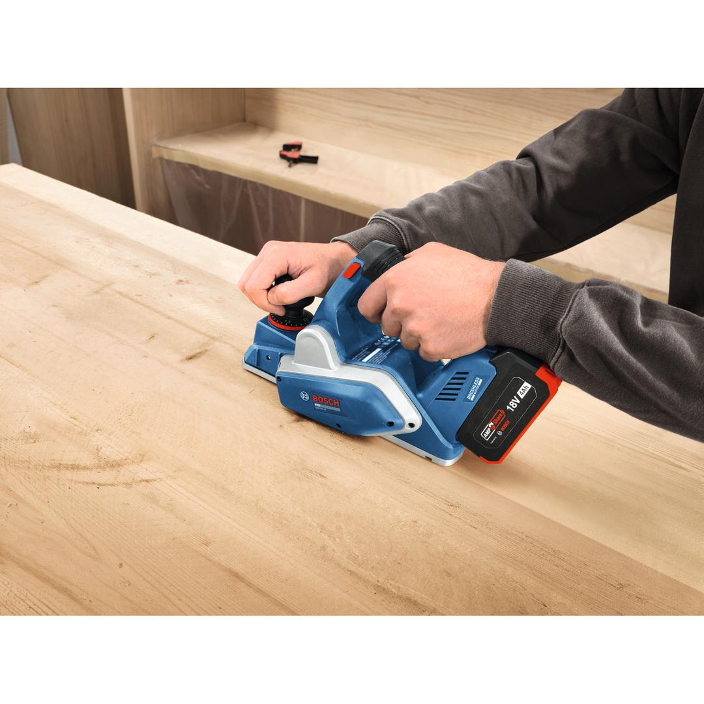
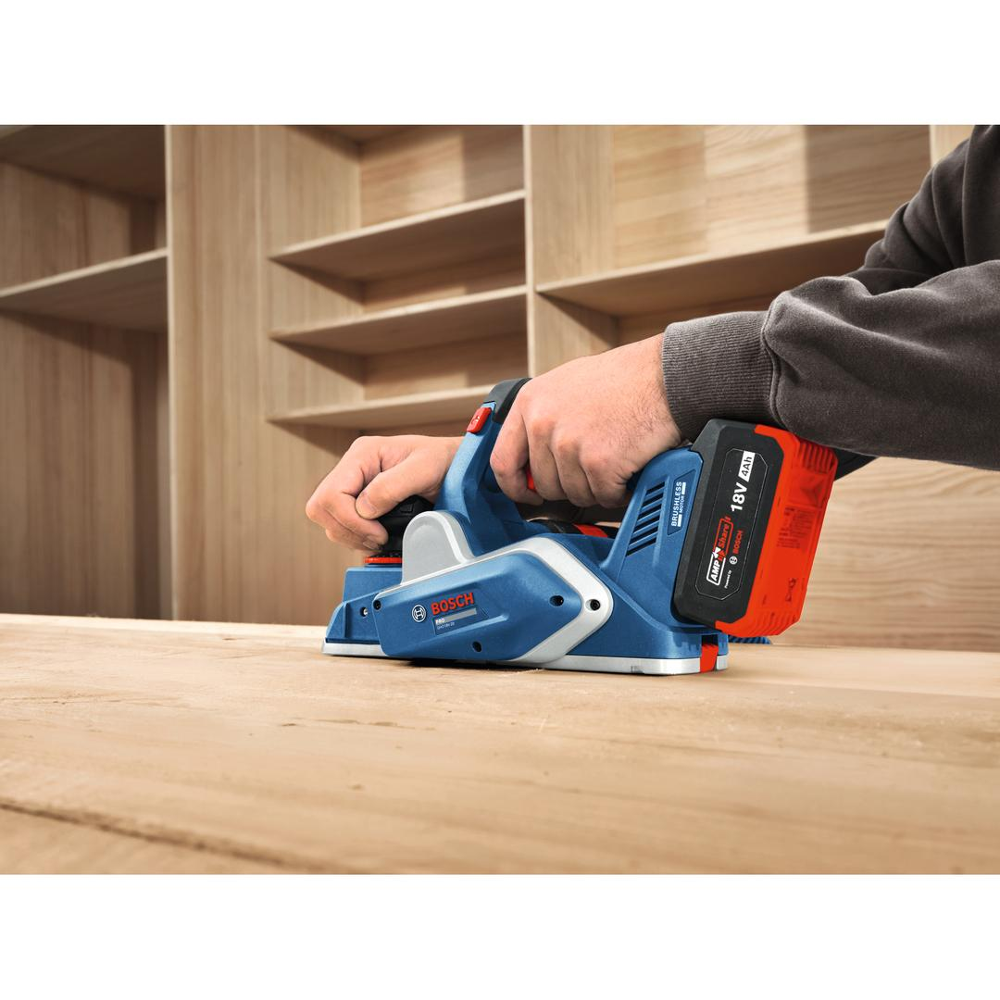
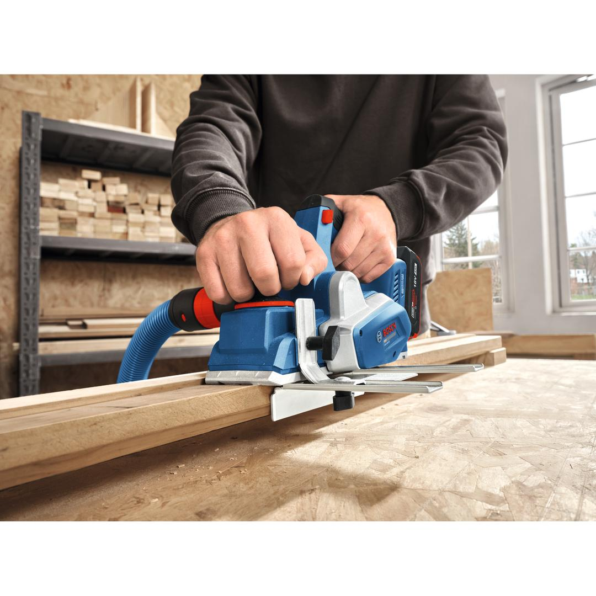
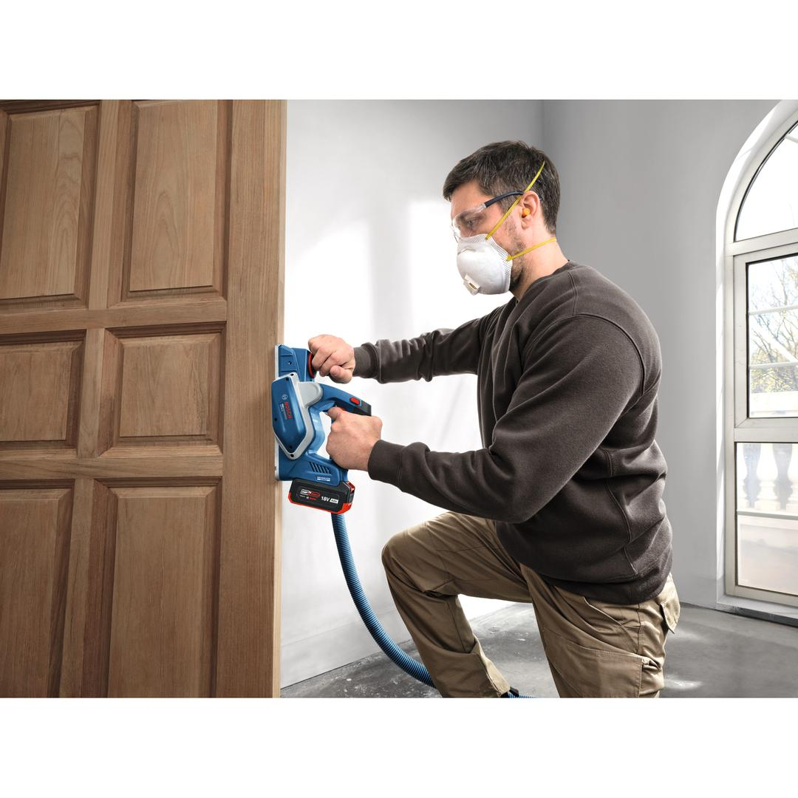
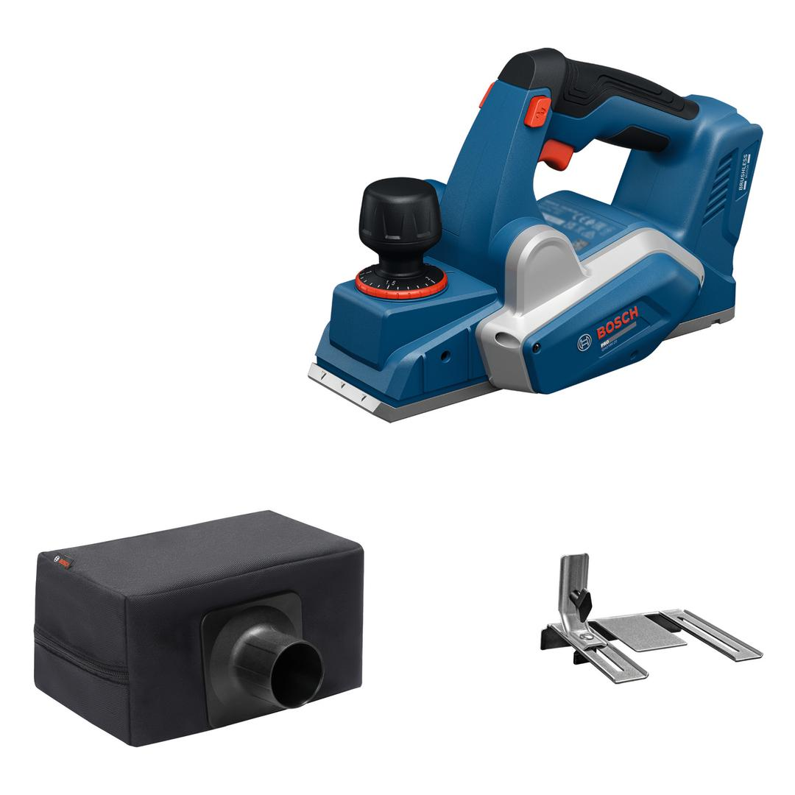
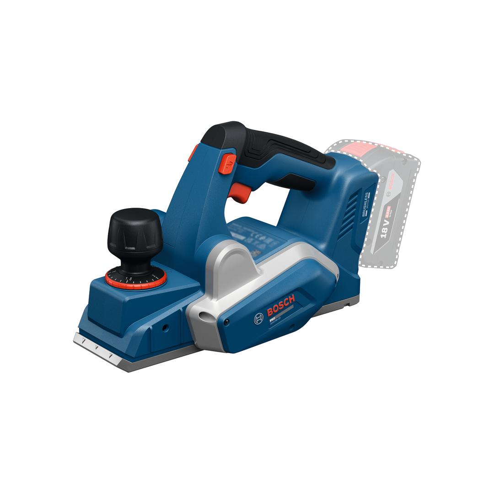

06015B5200






Carpenters and cabinet installers know the struggle of working with bulky planers that cause fatigue. The PRO GHO18V-20 cordless planer, with its compact design and powerful brushless motor, offers smooth, effortless handling. It features fine-depth control for precise and consistent planning, along with three chamfering grooves that allow for clean, professional edges with ease. The secure blade-change system enables accurate drum belt positioning without direct contact, enhancing both protection and convenience.
| Tool dimensions (width) |
139 mm |
| Tool dimensions (length) |
283 mm |
| Tool dimensions (height) |
185 mm |
| Battery voltage |
18.0 V |
| No-load speed |
14,000 rpm |
| Planing depth |
0 – 2 mm |
| Rebating depth |
9 mm |
| Planing width, max. |
82 mm |
| Weight excl. battery |
2.2 kg |
| BITURBO |
No |
Super compact cordless planer with enhanced precision
The PRO GHO18V-20 is the planer of choice for cabinet installers and carpenters. It is ideal for edge and surface planing on both solid and processed wood, as well as for chamfering and rebating tasks.
The PRO GHO18V-20 includes a dustbag for a cleaner workplace and is compatible with the Bosch Click & Clean system.